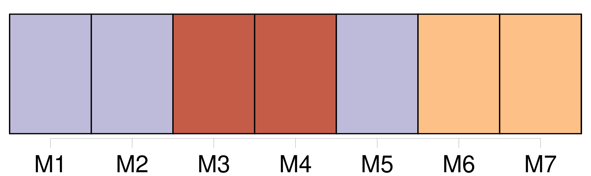

Longueur nb maillons : 21 mentions |
 |
[ article ] Depuis peu, [Gaëlle Malingrey] s'est lancée dans le grand bain de l'entreprise individuelle.
[Son] créneau : la coiffure et les soins de beauté à domicile. [Ses] deux CAP de coiffure et d'esthétique en poche, [Gaëlle] aurait pu choisir d'exercer en salon, mais c'est à une nouvelle forme de service qu' [elle] a préféré se destiner. Partant du constat qu'il existe une fraction non négligeable de personnes qui ne franchira jamais la porte d'un salon de beauté, [elle] a préféré proposer [ses] services au domicile même des consommateurs.
Coiffure et soins corporels allant de paire, [Gaëlle] a donc rajouté une seconde corde à son arc, en complétant [sa] formation initiale de coiffeuse. A Void, tout le monde ou presque [la] connaît.
Charmante et avenante jeune femme de 20 printemps, [Gaëlle] a fait ses premières armes en entrant en apprentissage chez « Josiane Coiffure » [Son] premier CAP en poche, [elle] a suivi une formation d'une année à l'école d'esthétique « Mireille » à Nancy. Désormais, [Gaëlle] fait de [ses] deux passions [son] métier, et [ses] premiers clients sont plus que satisfaits d' [elle] [1 phrases] Un simple coup de fil pour prendre rendez -vous, et [Gaëlle] pose ciseaux et sacoche à votre domicile, et ce, 6 jours sur 7. [1 phrases] Il faut donc savoir que [Gaëlle] propose également soins du visage et du corps, maquillage, épilations diverses, manucure... |
|
Il est possible de télécharger la ressource sur la page Ortolang |
Si vous avez des questions ou vous voyez des erreurs, merci d'envoyer un mail à silvia.federzoni89@gmail.com |